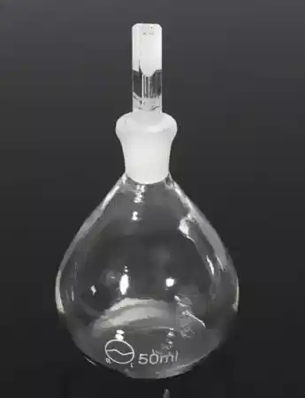

1. 50 ml capacity density bottle withstopper
2. A constant temperature water bath (27 ̊C)
3. Oven with a range of 105 to 110 ̊C
4. Vacuum desiccators
5. Vacuum pump
6. Other accessories, such as, weighing balance accurate to 0.001g, trays, wooden mallet etc.
